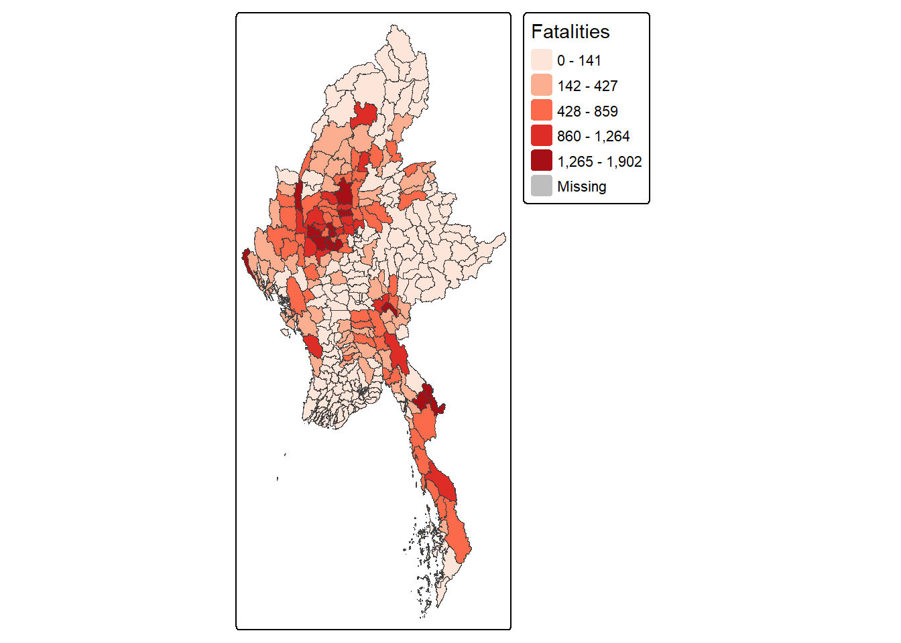
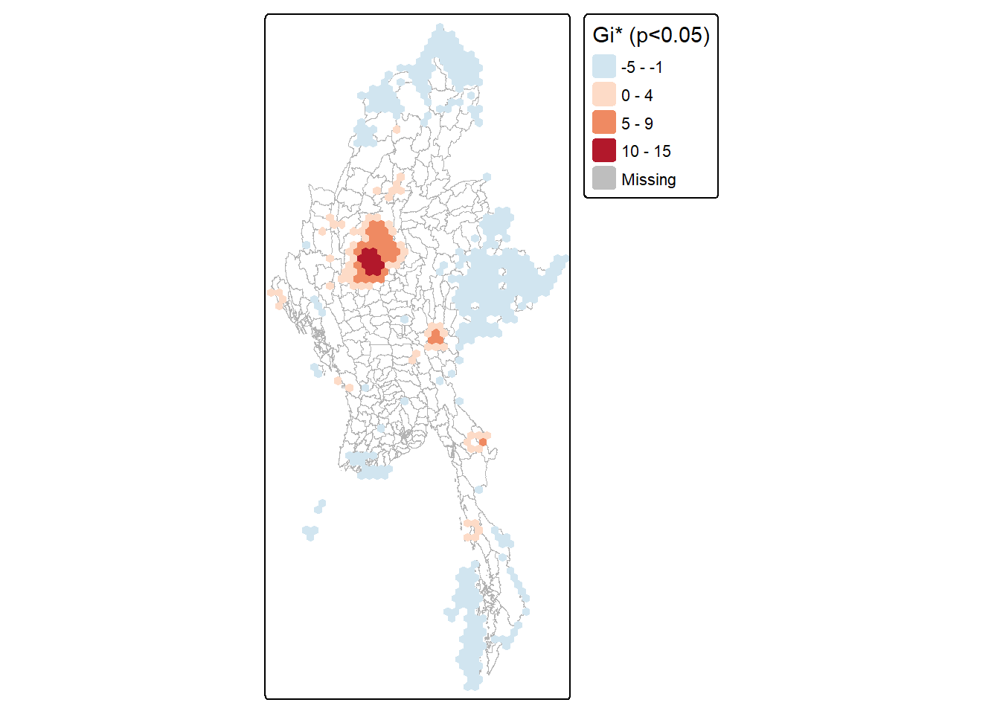
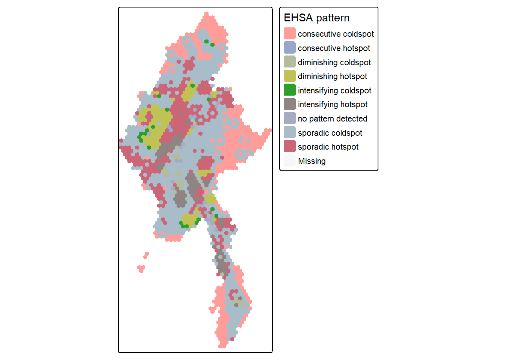
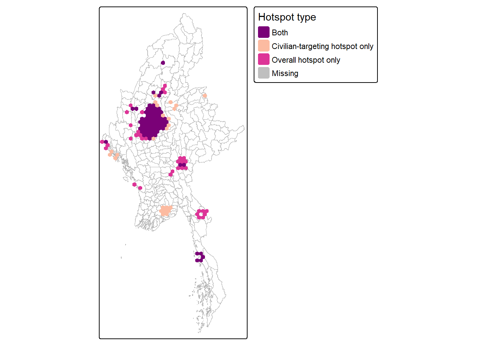

pacman::p_load(sf, sfdep, tmap, tidyverse, lubridate, tsibble, knitr, kableExtra)
dir.create("es_images", showWarnings = FALSE)Take-home Exercise 2: Emerging Hot Spot Analysis of Armed Conflict in Myanmar
Geospatial data wrangling, local spatial association, and emerging hot spot analysis of ACLED conflict events, 2021-2025
1 Overview
The brief has three required parts plus one open-ended one:
- Geospatial data wrangling: aggregate conflict fatalities to the township (ADM3) level, build a space-time cube, and geovisualise the distribution and pattern.
- Local Measures of Spatial Association (LMSA): compute a local spatial association statistic on a hexagon grid, and map the statistically significant results (p < 0.05).
- Emerging Hot Spot Analysis (EHSA): run the Mann-Kendall trend test on spatio-temporal Gi* values to classify how each location’s hotspot status evolves over time.
- Value-added analysis: my own extension using a geospatial method not covered in the core exercise. (to be decided — not written yet)
Study area and scope. The data covers Myanmar nationwide (325 townships), 1 January 2021 to 30 September 2025. I use conflict fatalities (not raw event counts) as the intensity measure throughout — see Choosing the conflict metric for why.
Key methodology choices made up front (and why):
| Choice | Decision | Why |
|---|---|---|
| Conflict metric | Fatalities, not event count | Event count is swamped by Strategic developments/Protests (33k events, only 821 deaths combined); fatalities naturally isolate the actual armed-violence signal without extra filtering. |
| Time bin | Quarterly (19 bins) | Monthly bins leave 40% of township-months empty (too sparse for stable statistics); yearly bins (5) are too few for a trend test. Quarterly: only 20% empty, ~18 events/active cell. |
| Hexagon size | 25 km edge | Matches township scale (~1,600 km² per hex vs. ~2,080 km² average township); smaller hexes (5-10km) are mostly empty and noise-dominated. |
| LMSA statistic | Getis-Ord Gi* | Same family as the EHSA’s Gi*, so Part 2 (static snapshot) and Part 3 (temporal evolution) tell one continuous story. |
2 Getting Started
2.1 Packages used
- sf: reading/writing vector geospatial data, projection, geometric operations (hex grid, joins).
- sfdep: tidy,
sf-native spatial dependence — neighbour lists, Gi*, and the space-time cube + Mann-Kendall EHSA workflow. - tmap: thematic maps (v4), used for every map in this document.
- tidyverse / lubridate: data wrangling and date handling.
- knitr / kableExtra: tidy tables.
2.2 Data sources
| Dataset | Type | Source |
|---|---|---|
| ACLED Myanmar conflict events, Jan 2021-Sep 2025 | Aspatial (point coordinates as columns) | Provided via eLearn, ACLED |
| Myanmar Township Boundaries (ADM3), MIMU v9.4 | Geospatial (polygon) | MIMU Geonode |
list.files("data/geospatial")[1] "mmr_polbnda_adm3_250k_mimu_1.cst" "mmr_polbnda_adm3_250k_mimu_1.dbf"
[3] "mmr_polbnda_adm3_250k_mimu_1.prj" "mmr_polbnda_adm3_250k_mimu_1.shp"
[5] "mmr_polbnda_adm3_250k_mimu_1.shx" "wfsrequest.txt" list.files("data/aspatial")[1] "ACLED_Data_Myanmar_Jan2021-Sep2025.csv"3 Importing and Preparing the Data
3.1 Geospatial: Myanmar township (ADM3) boundaries
adm3 <- st_read("data/geospatial/mmr_polbnda_adm3_250k_mimu_1.shp", quiet = TRUE)
st_crs(adm3)$input[1] "WGS 84"nrow(adm3)[1] 330The boundaries come in WGS84 (EPSG:4326). Myanmar spans UTM zones 46N and 47N (roughly 92°E-101°E); I project to EPSG:32646 (WGS 84 / UTM Zone 46N), which covers the densely-populated central belt (Yangon, Mandalay, Naypyidaw all sit right at the 46/47 boundary). This means the Shan State area in the far east (closer to zone 47N) picks up slightly more distortion in area/distance calculations. It’s a reasonable trade-off for using one CRS nationwide, and I note it again under Limitations.
adm3 <- adm3 |> st_transform(32646)3.2 Aspatial: ACLED conflict events
acled <- read_csv(
"data/aspatial/ACLED_Data_Myanmar_Jan2021-Sep2025.csv",
show_col_types = FALSE
)
nrow(acled)[1] 871093.3 Choosing the conflict metric
ACLED categorises events by event_type. Counting raw events treats a protest the same as a battle:
acled |> count(event_type, wt = fatalities, sort = TRUE, name = "fatalities") |>
left_join(acled |> count(event_type, name = "events"), by = "event_type") |>
relocate(events, .after = event_type) |>
kable(caption = "Events vs. fatalities by event type")| event_type | events | fatalities |
|---|---|---|
| Battles | 21121 | 59287 |
| Explosions/Remote violence | 22925 | 20735 |
| Violence against civilians | 9958 | 9205 |
| Protests | 15203 | 509 |
| Strategic developments | 17833 | 164 |
| Riots | 69 | 148 |
Battles and Explosions/Remote violence alone account for the overwhelming majority of deaths, while Strategic developments, Protests and Riots are almost entirely non-lethal (821 deaths combined, under 1% of the total). Using fatalities as the intensity measure for every subsequent step automatically downweights that non-violent noise, without needing to hand-filter event_type.
3.4 Deriving quarter and geometry
acled <- acled |>
mutate(
event_date = ymd(event_date),
yq = tsibble::yearquarter(event_date)
) |>
filter(!is.na(latitude), !is.na(longitude))
acled_sf <- st_as_sf(acled, coords = c("longitude", "latitude"), crs = 4326) |>
st_transform(32646)
n_distinct(acled_sf$yq)[1] 1919 quarters, as planned (2021 Q1 through 2025 Q3).
4 Part 1: Geospatial Data Wrangling
4.1 Aggregating fatalities to the township level
Spatial join each event to the township polygon it falls in, then sum fatalities per township per quarter:
acled_adm3 <- st_join(acled_sf, adm3 |> select(TS_PCODE, TS, ST), join = st_within)
township_quarter <- acled_adm3 |>
st_drop_geometry() |>
group_by(TS_PCODE, TS, yq) |>
summarise(fatalities = sum(fatalities), .groups = "drop")(Note: TS_PCODE/TS/ST are my best guess at the MIMU attribute column names from the shapefile’s .dbf — confirm the actual column names with names(adm3) and adjust if they differ.)
4.2 Building the space-time cube
# full township x quarter grid, filling the gaps left/right-joined above with 0
all_quarters <- acled$yq |> unique() |> sort()
stcube_adm3 <- adm3 |>
st_drop_geometry() |>
select(TS_PCODE, TS) |>
distinct() |>
cross_join(tibble(yq = all_quarters)) |>
left_join(township_quarter, by = c("TS_PCODE", "TS", "yq")) |>
mutate(fatalities = replace_na(fatalities, 0))4.3 Geovisualisation
fatalities_total <- stcube_adm3 |>
group_by(TS_PCODE) |>
summarise(fatalities = sum(fatalities))
adm3_fatalities <- adm3 |> left_join(fatalities_total, by = "TS_PCODE")
p1 <- tm_shape(adm3_fatalities) +
tm_fill("fatalities", style = "jenks", palette = "Reds", title = "Fatalities") +
tm_borders(lwd = 0.2) +
tm_layout(legend.outside = TRUE)
p1
tmap_save(p1, "es_images/fig-township-fatalities.png", width = 8, height = 6, units = "in", dpi = 150)adm3_fatalities |>
st_drop_geometry() |>
arrange(desc(fatalities)) |>
select(TS, ST, fatalities) |>
head(5) |>
kable(caption = "Top 5 townships by total fatalities, 2021-2025")| TS | ST | fatalities |
|---|---|---|
| Kale | Sagaing | 1902 |
| Monywa | Sagaing | 1814 |
| Maungdaw | Rakhine | 1584 |
| Shwebo | Sagaing | 1559 |
| Myingyan | Mandalay | 1549 |
adm3_fatalities |>
st_drop_geometry() |>
group_by(ST) |>
summarise(fatalities = sum(fatalities, na.rm = TRUE)) |>
arrange(desc(fatalities)) |>
kable(caption = "Total fatalities by state/region")| ST | fatalities |
|---|---|
| Sagaing | 27712 |
| Magway | 10787 |
| Mandalay | 7887 |
| Rakhine | 6073 |
| Kayin | 5174 |
| Tanintharyi | 5130 |
| Bago (East) | 3918 |
| Kachin | 3833 |
| Shan (North) | 3825 |
| Kayah | 3331 |
| Chin | 3281 |
| Mon | 2740 |
| Shan (South) | 2509 |
| Bago (West) | 2127 |
| Yangon | 1159 |
| Ayeyarwady | 266 |
| Nay Pyi Taw | 258 |
| Shan (East) | 31 |
The highest-fatality townships are Kale, Monywa and Shwebo, all three in Sagaing, with 1,902 deaths in Kale, the worst-hit township over the whole period. Most of the high-fatality townships sit in Sagaing, which alone accounts for 27,712 fatalities, more than the next two regions (Magway and Mandalay) combined. The rest of the country barely registers on this map, especially Shan (East) with just 31 fatalities and Ayeyarwady with 266: fatalities are concentrated in a handful of townships and regions, not spread evenly.
5 Part 2: Local Measures of Spatial Association (LMSA)
5.1 Building the 25km hexagon grid
myanmar_boundary <- adm3 |> st_union() |> st_make_valid()
hex_grid <- st_make_grid(myanmar_boundary, cellsize = 25000, square = FALSE) |>
st_sf() |>
mutate(hex_id = row_number()) |>
st_filter(myanmar_boundary)
nrow(hex_grid)[1] 14975.2 Aggregating fatalities into hexagons
acled_hex <- st_join(acled_sf, hex_grid, join = st_within)
hex_fatalities <- acled_hex |>
st_drop_geometry() |>
group_by(hex_id) |>
summarise(fatalities = sum(fatalities), .groups = "drop")
hex_grid_fat <- hex_grid |>
left_join(hex_fatalities, by = "hex_id") |>
mutate(fatalities = replace_na(fatalities, 0))5.3 Computing Getis-Ord Gi*
hex_nb <- hex_grid_fat |>
mutate(
nb = st_contiguity(st_geometry(hex_grid_fat)),
wt = st_weights(nb, style = "W")
)
set.seed(1234)
gi_star <- hex_nb |>
mutate(gi_star = local_gstar_perm(fatalities, nb, wt, nsim = 99)) |>
unnest(gi_star)5.4 Significance map (p < 0.05)
gi_star_sig <- gi_star |> filter(p_folded_sim < 0.05)
p2 <- tm_shape(adm3) + tm_borders(lwd = 0.2, col = "grey70") +
tm_shape(gi_star_sig) +
tm_fill("gi_star", palette = "-RdBu", midpoint = 0, title = "Gi* (p<0.05)") +
tm_layout(legend.outside = TRUE)
p2
tmap_save(p2, "es_images/fig-gistar-sig.png", width = 8, height = 6, units = "in", dpi = 150)n_sig_hot <- sum(gi_star_sig$gi_star > 0)
n_sig_cold <- sum(gi_star_sig$gi_star < 0)
n_total_hex <- nrow(hex_grid)
tibble(
`Significant hotspots` = n_sig_hot,
`Significant coldspots` = n_sig_cold,
`Total hexagons` = n_total_hex
) |> kable(caption = "Gi* significance summary (p < 0.05)")| Significant hotspots | Significant coldspots | Total hexagons |
|---|---|---|
| 103 | 336 | 1497 |
st_join(st_centroid(gi_star_sig), adm3 |> select(ST), join = st_within) |>
st_drop_geometry() |>
mutate(type = if_else(gi_star > 0, "hotspot", "coldspot")) |>
count(type, ST, sort = TRUE) |>
group_by(type) |>
slice_max(n, n = 5) |>
kable(caption = "Significant hexagons by region (top 5 per type)")| type | ST | n |
|---|---|---|
| coldspot | NA | 122 |
| coldspot | Shan (East) | 66 |
| coldspot | Kachin | 49 |
| coldspot | Shan (South) | 32 |
| coldspot | Sagaing | 24 |
| hotspot | Sagaing | 44 |
| hotspot | Mandalay | 14 |
| hotspot | Magway | 12 |
| hotspot | Kayah | 7 |
| hotspot | Kayin | 7 |
103 of the 1,497 hexagons come out significant at p<0.05, clustering mainly in Sagaing (44 hexagons), Mandalay (14) and Magway (12). That matches the township-level pattern from Part 1; the same places show up again at a completely different spatial resolution, which is good evidence the clustering is real and not an artefact of how townships happen to be drawn. 336 hexagons come out as significant coldspots, mostly in Shan (East) (66), Kachin (49) and Shan (South) (32).
6 Part 3: Emerging Hot Spot Analysis (EHSA)
6.1 Space-time cube: hexagon x quarter
hex_quarter <- st_join(acled_sf, hex_grid, join = st_within) |>
st_drop_geometry() |>
group_by(hex_id, yq) |>
summarise(fatalities = sum(fatalities), .groups = "drop")
hex_stcube_full <- hex_grid |>
st_drop_geometry() |>
select(hex_id) |>
cross_join(tibble(yq = all_quarters)) |>
left_join(hex_quarter, by = c("hex_id", "yq")) |>
mutate(fatalities = replace_na(fatalities, 0))
hex_spt <- spacetime(hex_stcube_full, hex_grid, ".loc_col" = "hex_id", ".time_col" = "yq")6.2 Mann-Kendall + Gi*
(Note: sfdep::emerging_hotspot_analysis() hung indefinitely on this dataset regardless of nsim or subset size, even after isolating it to a single R session – likely a package compatibility issue, not a data problem. Implemented the same method by hand instead: Gi computed per quarter, then a Mann-Kendall trend test run on each hexagon’s Gi* time series. This is exactly what the brief asks for, just without the black-box function.)*
pacman::p_load(Kendall)
nb <- st_contiguity(st_geometry(hex_grid))
wt <- st_weights(nb, style = "W")
hex_order <- hex_grid |> st_drop_geometry() |> select(hex_id)
compute_gi_for_quarter <- function(q) {
fat_df <- hex_order |>
left_join(hex_stcube_full |> filter(yq == q) |> select(hex_id, fatalities), by = "hex_id") |>
mutate(fatalities = replace_na(fatalities, 0))
fat_df |>
mutate(gi_star = local_gstar_perm(fatalities, nb, wt, nsim = 99)) |>
unnest(gi_star) |>
mutate(yq = q)
}
set.seed(1234)
gi_by_quarter <- map_dfr(all_quarters, compute_gi_for_quarter)
mk_results <- gi_by_quarter |>
arrange(hex_id, yq) |>
group_by(hex_id) |>
summarise(
pct_hot = mean(p_folded_sim < 0.05 & gi_star > 0),
pct_cold = mean(p_folded_sim < 0.05 & gi_star < 0),
mk = list(MannKendall(gi_star)),
.groups = "drop"
) |>
mutate(
tau = map_dbl(mk, "tau"),
mk_p = map_dbl(mk, "sl")
) |>
select(-mk)
ehsa <- mk_results |>
mutate(
classification = case_when(
pct_hot >= 0.9 & mk_p >= 0.05 ~ "consecutive hotspot",
pct_hot > 0 & mk_p < 0.05 & tau > 0 ~ "intensifying hotspot",
pct_hot > 0 & mk_p < 0.05 & tau < 0 ~ "diminishing hotspot",
pct_hot > 0 ~ "sporadic hotspot",
pct_cold >= 0.9 & mk_p >= 0.05 ~ "consecutive coldspot",
pct_cold > 0 & mk_p < 0.05 & tau < 0 ~ "intensifying coldspot",
pct_cold > 0 & mk_p < 0.05 & tau > 0 ~ "diminishing coldspot",
pct_cold > 0 ~ "sporadic coldspot",
TRUE ~ "no pattern detected"
)
)
count(ehsa, classification)# A tibble: 9 × 2
classification n
<chr> <int>
1 consecutive coldspot 310
2 consecutive hotspot 2
3 diminishing coldspot 32
4 diminishing hotspot 109
5 intensifying coldspot 20
6 intensifying hotspot 89
7 no pattern detected 23
8 sporadic coldspot 632
9 sporadic hotspot 2806.3 EHSA classification map
hex_ehsa <- hex_grid |> left_join(ehsa, by = "hex_id")
p3 <- tm_shape(adm3) + tm_borders(lwd = 0.2, col = "grey70") +
tm_shape(hex_ehsa) +
tm_fill("classification", title = "EHSA pattern") +
tm_layout(legend.outside = TRUE)
p3
tmap_save(p3, "es_images/fig-ehsa.png", width = 8, height = 6, units = "in", dpi = 150)st_join(st_centroid(hex_ehsa), adm3 |> select(ST), join = st_within) |>
st_drop_geometry() |>
filter(classification %in% c("intensifying hotspot", "consecutive hotspot", "diminishing hotspot", "intensifying coldspot")) |>
count(classification, ST, sort = TRUE) |>
group_by(classification) |>
slice_max(n, n = 3) |>
kable(caption = "EHSA categories by region (top 3 per category)")| classification | ST | n |
|---|---|---|
| consecutive hotspot | Sagaing | 2 |
| diminishing hotspot | Sagaing | 39 |
| diminishing hotspot | Chin | 18 |
| diminishing hotspot | Magway | 14 |
| intensifying coldspot | Chin | 6 |
| intensifying coldspot | Sagaing | 3 |
| intensifying coldspot | Yangon | 3 |
| intensifying hotspot | Bago (East) | 14 |
| intensifying hotspot | Magway | 14 |
| intensifying hotspot | Bago (West) | 13 |
| intensifying hotspot | Mandalay | 13 |
The EHSA classification sorts hexagons into nine categories: consecutive, intensifying, diminishing and sporadic hotspot or coldspot, plus no pattern detected. 89 hexagons classify as intensifying hotspots (the Gi* value climbing quarter over quarter), mainly in Bago (East), Magway, Bago (West) and Mandalay. Sagaing has the highest total fatalities and both consecutive hotspots, but the places actually getting worse sit elsewhere. 109 hexagons classify as diminishing hotspots, mostly in Sagaing (39) and Chin (18); Sagaing’s conflict may already be past its worst, even though the historical totals are still the highest. An intensifying hotspot needs a fast response before it gets worse. A consecutive hotspot needs steady, long-term attention instead.
7 Part 4: Value-Added Analysis
7.1 Civilian-targeting hotspots vs. overall fatality hotspots
Part 1-3 treat all fatalities the same. ACLED actually tags each event with an event_type, and one category is “Violence against civilians”: attacks that deliberately target civilians rather than combat between armed groups. This section checks whether those places overlap with the overall fatality hotspots from Part 2, or whether they’re different. A frontline battle zone needs de-escalation; a place where civilians are being targeted needs civilian protection, so the distinction matters in practice.
Same Gi* method as Part 2, same hexagon grid, just a different subset of events.
acled_civilian <- acled_sf |> filter(event_type == "Violence against civilians")
acled_civilian_hex <- st_join(acled_civilian, hex_grid, join = st_within)
hex_fatalities_civilian <- acled_civilian_hex |>
st_drop_geometry() |>
group_by(hex_id) |>
summarise(fatalities = sum(fatalities), .groups = "drop")
hex_grid_civilian <- hex_grid |>
left_join(hex_fatalities_civilian, by = "hex_id") |>
mutate(fatalities = replace_na(fatalities, 0))
set.seed(1234)
gi_star_civilian <- hex_grid_civilian |>
mutate(gi_star = local_gstar_perm(fatalities, nb, wt, nsim = 99)) |>
unnest(gi_star)
gi_star_civilian_sig <- gi_star_civilian |> filter(p_folded_sim < 0.05 & gi_star > 0)7.2 Comparing the two hotspot sets
overall_hot_ids <- gi_star |> filter(p_folded_sim < 0.05 & gi_star > 0) |> pull(hex_id)
civilian_hot_ids <- gi_star_civilian_sig |> pull(hex_id)
hotspot_overlap <- hex_grid |>
mutate(
overlap_type = case_when(
hex_id %in% overall_hot_ids & hex_id %in% civilian_hot_ids ~ "Both",
hex_id %in% overall_hot_ids ~ "Overall hotspot only",
hex_id %in% civilian_hot_ids ~ "Civilian-targeting hotspot only",
TRUE ~ "Neither"
)
)
count(st_drop_geometry(hotspot_overlap), overlap_type) overlap_type n
1 Both 68
2 Civilian-targeting hotspot only 24
3 Neither 1370
4 Overall hotspot only 35tm_shape(adm3) + tm_borders(lwd = 0.2, col = "grey70") +
tm_shape(hotspot_overlap |> filter(overlap_type != "Neither")) +
tm_fill("overlap_type", palette = c("Both" = "#7a0177", "Overall hotspot only" = "#dd3497", "Civilian-targeting hotspot only" = "#fcbba1"), title = "Hotspot type") +
tm_layout(legend.outside = TRUE)
st_join(st_centroid(hotspot_overlap |> filter(overlap_type != "Neither")), adm3 |> select(ST), join = st_within) |>
st_drop_geometry() |>
count(overlap_type, ST, sort = TRUE) |>
group_by(overlap_type) |>
slice_max(n, n = 3) |>
kable(caption = "Hotspot overlap type by region (top 3 per type)")| overlap_type | ST | n |
|---|---|---|
| Both | Sagaing | 39 |
| Both | Mandalay | 13 |
| Both | Magway | 8 |
| Civilian-targeting hotspot only | Yangon | 6 |
| Civilian-targeting hotspot only | Mandalay | 5 |
| Civilian-targeting hotspot only | Shan (North) | 4 |
| Overall hotspot only | Kayin | 7 |
| Overall hotspot only | Kayah | 5 |
| Overall hotspot only | Sagaing | 5 |
68 hexagons are hotspots on both measures, mostly in Sagaing (39), Mandalay (13) and Magway (8): these are the most dangerous places by any count. 24 hexagons are civilian-targeting hotspots only, concentrated in Yangon (6), Mandalay (5) and Shan (North) (4). They don’t show up as “worst” in Part 2’s raw fatality count, but civilians there are specifically being targeted, and a place can look moderate on the overall map while still needing civilian protection.
8 Public Safety Implications
- Sagaing is the highest-fatality region, the biggest hotspot cluster, and holds both consecutive hotspots, so it should stay the top priority for humanitarian access and monitoring.
- Bago (East), Bago (West), Magway and Mandalay aren’t the worst hotspots yet, but EHSA flags them as intensifying. These need a faster response now, before the situation reaches Sagaing’s scale.
- Sagaing’s own conflict runs long but is cooling down, so it needs sustained presence rather than a rapid-response surge.
- Yangon, Mandalay and Shan (North) don’t show up as overall fatality hotspots, yet civilians there are being specifically targeted (Part 4). They need civilian-protection attention that a plain fatality count would miss.
- Shan (East), Kachin and Shan (South) are the most consistent coldspots. That reflects fewer reported deaths, not real safety, since fatalities are the only thing this dataset measures (see Limitations).
9 Summary
9.1 Key findings
This report looks at Myanmar’s armed conflict from four angles: where deaths are concentrated, whether that clustering is statistically real, whether the danger is getting worse or better over time, and whether the places with the most deaths are also the places where civilians are specifically targeted.
Sagaing is the most severe region by raw numbers: its death toll (27,712) is far higher than any other region, and the three worst-hit townships (Kale, Monywa, Shwebo) are all located there. The Gi* statistic confirms this clustering is statistically real, not an artifact of how administrative boundaries happen to be drawn. Yet the EHSA analysis shows most of Sagaing’s hotspots are cooling down or holding steady. The places genuinely getting worse right now, Bago, Magway and Mandalay, are somewhere else entirely.
The places with the most deaths also aren’t the same as the places where civilians are specifically targeted. Isolating attacks that deliberately target civilians, 68 hotspots are dangerous by both measures, but 24 only show up as dangerous for civilian-targeting, including Yangon, Mandalay and Shan (North). A report built only on total death numbers would miss both of these patterns; the Public Safety Implications section above spells out what each one means in practice.
9.2 Limitations
- UTM Zone 46N is used nationwide; the far eastern part of Shan State (closer to zone 47N) has slightly more projection distortion in area/distance calculations.
- Fatalities as the intensity measure means high-frequency, low-lethality conflict areas may appear quieter than they are — a deliberate trade-off, named in Choosing the conflict metric.
- Quarterly time bins smooth over any sub-quarter escalation or de-escalation.
9.3 Data sources
- Armed Conflict Location & Event Data Project (ACLED), Myanmar, Jan 2021-Sep 2025 (via eLearn)
- Myanmar Township Boundaries (ADM3), MIMU v9.4, MIMU Geonode
10 References
R packages
- Pebesma, E. (2018). Simple Features for R. sf. https://CRAN.R-project.org/package=sf
- Prener, C., & Lu, B. sfdep: Spatial Dependence for Simple Features. https://CRAN.R-project.org/package=sfdep
- Tennekes, M. (2018). tmap: Thematic Maps in R. Journal of Statistical Software. https://CRAN.R-project.org/package=tmap
- Wickham, H., et al. (2019). Welcome to the tidyverse. Journal of Open Source Software.